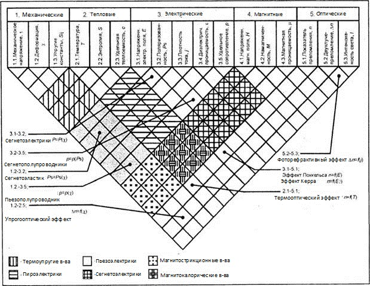
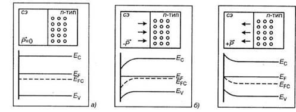

электронный
ресурс по учебной дисциплине 1-58 01 01 - "ИНЖЕНЕРНО-ПСИХОЛОГИЧЕСКОЕ ОБЕСПЕЧЕНИЕ ИНФОРМАЦИОННЫХ ТЕХНОЛОГИЙ"
|
||
| Оглавление | Программа | Теория | Практика| Контроль знаний | Об авторах | ||
Лекция 8
Современные разработки компьютерной техники на основе приборов и устройств функциональной электроники
1. Основы функциональной электроники.
Физические основы. Функциональная диэлектрическая электроника представляет собой направление в функциональной электронике, в котором изучаются явления и эффекты в активных диэлектриках, а также возможность создания приборов и устройств обработки и хранения информации на основе динамических неоднородностей электрической, магнитной или электромагнитной природы.
Динамические неоднородности.
В активных диэлектриках в основном используются динамические неоднородности различной физической природы:
Особый интерес представляют сегнетоэлектрические домены. Они представляют собой области однородной спонтанной поляризации Ps (рисунок 8.1, а). Размеры доменов составляют несколько микрон и разделены переходной областью или доменной границей толщиной в несколько ангстрем (рисунок 8.1,б). Поляризация Р зависит от напряженности электрического поля Е нелинейным образом. При циклическом изменении Е от +Ек до -Ек вектор поляризации меняется от +Ps до -Ps, где Ек— коэрцитивная сила. Функция PS=f(EK) имеет вид петли гистерезиса (рисунок 8.1, в). Петля гистерезиса является отличительной чертой динамических неоднородностей сегнетоэлектрической природы. Время электронной переполяризации составляет ~ 10-15 с.
Спонтанной поляризацией обладают и пироэлектрики, но направление вектора PS в них строго фиксировано и поэтому не обнаружено динамических неоднородностей типа доменов.
В сегнетоэлектриках-сегнетоэластиках наблюдается спонтанная локальная деформация в результате изменения внешних условий. Спонтанная деформация сопровождается изменением знака при воздействии электрического поля.
В сегнетоэлектриках наблюдаются фотостимулированные фазовые переходы 1-го и 2-го рода, при которых генерируются фазоны — макроскопические квазичастицы. Фазоны представляют собой возбуждение в гетерофазной системе из смеси фазовых состояний одного и того же вещества, связанной с образованием вокруг заряженной частицы флуктуации концентрации одной из компонент системы, создающей для частицы потенциальную яму.
Самосогласованный радиус фазона R0 при данной температуре и заданной плотности поверхностной энергии пропорционален числу локализованных электронов n: R0~n2/3 (2R0»10Å). Фазоны можно рассматривать как подвижные пакеты квазичастиц с эффективной массой М. Модель фазона предполагает существенное влияние фазового перехода 1-го рода на электропроводность. Такие пакеты квазичастиц— фазонов — можно, по-видимому, рассматривать как динамические неоднородности в сегнетоэлектриках.
Рисунок 8.1 – Слоистая доменная структура и распределение в ней полей (а), структура сегнетоэлектрической доменной стенки (6), петля гистерезиса переполяризации домена (в)
В сегнетоэлектриках же в области фотостимулированных фазовых переходов типа "порядок—беспорядок", образуются макроскопические квазичастицы — флуктоны, которые тоже можно рассматривать в качестве динамических неоднородностей. Флуктуоны возбуждаются в гетерофазной системе и представляют собой флуктуации концентрации одной из компонент системы, создающие для частицы потенциальную яму, перемещающуюся вместе с частицей.
В сегнетомагнитных кристаллах одновременно существуют магнитная и электрическая дипольные структуры и соответственно векторы спонтанной поляризации Ps и спонтанной намагниченности MS. В элементарных ячейках кристаллографических структур сегнетомагнетиков должны находиться частицы, обладающие как электрическим дипольным моментом, так и магнитным. Сосуществование электрических и магнитных дипольных структур определяется принципом симметрии в различных кристаллографических структурах. Вещества определенной симметрии обладают магнитоэлектрическим эффектом. Он состоит в том, что при наложении электрического поля появляется пропорциональная полю намагниченность, а при наложении магнитного поля появляется электрическая поляризация, пропорциональная этому полю. В общем случае для таких сред справедливы соотношения:
………….(8.1)
где v и v' - магнитоэлектрические тензоры, ε — диэлектрическая проницаемость, m - магнитная проницаемость вещества.
Представляют интерес для их использования в качестве динамических неоднородностеи экситоны и поляритоны. Экситоны представляют собой электронное возбуждение в кристалле диэлектрика или полупроводника, распространяющееся по кристаллу в виде волны, но не связанное с передачей электрического заряда или массы. При освещении кристалла могут возникнуть поляритоны, представляющие собой квантовые квазичастицы, возникающие при взаимодействии экситона и оптического фонона с фотоном. Эти экзотические квазичастицы способны переносить информационный сигнал и могут быть использованы в устройствах функциональной электроники.
Континуальные среды. В качестве континуальных сред в функциональной диэлектрической электронике используются, как правило, активные диэлектрики. Под активными диэлектриками будем понимать диэлектрические материалы, в которых могут быть возбуждены динамические неоднородности и которые предназначены для процессов генерации, усиления, преобразования и хранения информационных сигналов.
Активные диэлектрики существенно отличаются от пассивных, которые применяются в основном в качестве электроизоляционных материалов.
Свойства активных диэлектриков зависят от воздействия на них определенных физических полей: механических, тепловых, электрических, магнитных. Результатом взаимодействия структуры диэлектрика и полей является генерация динамических неоднородностей
определенной физической природы. Активные диэлектрики, используемые в качестве континуальных сред в приборах и устройствах функциональной диэлектрической электроники, обладают широким набором свойств, определяемых типом воздействующих физических полей: механических, тепловых, электрических, магнитных, оптических.
В результате анализа континуальных сред удалось систематизировать свойства диэлектриков в зависимости от воздействующих на них физических полей.
На рисунок 8.2 схематично представлены информационные поля, отражающие различные физические взаимодействия в активных диэлектриках. В соответствии с принятой системой классификации пронумеруем различные свойства активных диэлектриков в зависимости от типов информационных полей.
Область, ограниченная координатами 1.1—2.1, 1.3—2.1, 1.1—2.3, 1.3—2.3 представляет собой термоупругие свойства диэлектриков.

Рисунок 8.2 – Системный анализ свойств активных диэлектриков
Пьезоэлектрики располагаются в области, ограниченной координатами 1.1—3.1, 1.3—3.1, 3.5, 1.3—3.5. Их основным свойством является наличие поляризации, направление и уровень которых могут быть изменены при внешних воздействиях. Различают прямой пьезоэлектрический эффект, заключающийся в поляризованности Р диэлектрика в зависимости от механического напряжения а, описываемый соотношением
………….(8.2)
где d— пьезомодуль.
В обратном пьезоэлектрическом эффекте деформация % линейно зависит от поляризованности Р в соответствии с соотношением
………….(8.3)
где
………….(8.4)
здесь ε - диэлектрическая проницаемость диэлектрика, ε0— константа. Заметим, что пьезоэлектрические материалы анизотропны. Их пьезоэлектрические, диэлектрические и упругие свойства описываются набором компонент пьезомодулей dij упругих констант Sjj, диэлектрических проницаемостей sij по разным направлениям.
Каждая ячейка описываемой информационной области обладает рядом замечательных свойств и определяет тип пьезоэлектриков. Сегнетоэластики занимают ячейку с координатами 1.2—3.2 и описываются зависимостью Р = Р(х). Пьезополупроводники располагаются в ячейках с координатами 1.2—3.5 и, как правило, представляют собой пленки CdS, ZnS, ZnO с низким значением ε (< 10) и с выраженной зависимостью r = r (х).
Пироэлектрикы представляют собой класс активных диэлектриков, в которых происходит поляризация при однородном по объему изменению температуры. Этот класс располагается в информационной области с координатами 2.1—3.1; 2.3—3.1; 2.1—3.5; 2.3—3.5. Спонтанная или остаточная поляризация Р зависит от температуры Р - Р(Т), и для количественного описания вводят пирокоэффгщиент р, определяемый выражением
………….(8.5)
Все пироэлектрики обладают обратным электрокалорическим эффектом, потому что их температура изменяется при поляризации.
Особый интерес для функциональной электроники представляют собой сегнетоэлектрические континуальные среды, имеющие доменную структуру. Каждый домен обладает спонтанной поляризацией, уровень и направление которых могут быть изменены внешними полями, например электрическим. В отличие от пироэлектриков, у которых направление вектора поляризации Р строго фиксировано, у сегнетоэлектриков суммарная поляризация зависит от поляризации отдельных доменов. На рисунок 8.3 сегнетоэлектрики занимают область с координатами 3.1—3.2.
В зависимости от вида поляризации различают ионные, дипольные и несобственные сегнетоэлектрики. В ионных сегнетоэлектриках ячейка имеет вид куба типа АВ03, по вершинам которого расположены ионы типа А(Ва2+, РЬ2+, К2+...), в центре ионы типа В(ТЦ+, Nb4+), а в центрах граней ионы кислорода О2-. Если ионы типа В находятся в центре элементарной ячейки (рисунок 8.3, а), то центры тяжести положительных и отрицательных ионов совпадают и общий дипольный момент равен нулю. Смещение иона В(П4+, например) из центра кислородного октаэдра приводит к разбалансировке и возникновению ди- польного момента Р, направленного в сторону смещения (рисунок 8.3, б).
Спонтанная поляризация в сегнетоэлектриках такого типа является следствием упорядоченного смещения ионов и представляет собой фазовый переход типа смещения.
К ионным сегнетоэлектрикам относятся структуры типа перовскита (СаТЮз), титанат бария (ВаТЮ3), титанат свинца (РЬТЮ3), ниобат калия (KNbO3) и т. п.
В элементарной ячейке дипольных сегнетоэлектриков содержатся атомы с двумя положениями равновесия, электрическая поляризация которой и определяется взаимным положением атомов. На рисунке 8.3, в представлено взаимное расположение ионов при положительном и отрицательном направлениях дипольного момента (рисунок 8.3, г). Фазовый переход в дипольных сегнетоэлектриках, происходящий в точке Кюри, называется переходом типа "порядок - беспорядок"
Рисунок 8.3 – Элементарные ячейки сегнетоэлектриков: ионный тип в неполяризованном (а) и поляризованном (б) состояниях; дипольный тип при положительном (в) и отрицательном (г) дипольных моментах
К дипольным сегнетоэлектрикам относятся сегнетова соль (NaKC4H4O64H2O), тригли- цинсульфат ТГС (NH2CH2COOH)3H2SO4, нитрид натрия (NaNO2) и т. п.
К особой группе относятся несобственные сегнетоэлектрики, в которых спонтанная поляризация обусловлена, например, деформацией кристаллической решетки при фазовом переходе. К этому типу относятся молибдат гадолиния [Cd2(MoO4)3], лангбейниты, [T12Cd2(SO4)]3, фторбериллат аммония [(NH4)2BeF] и т. п.
Кристаллы, в соседних ячейках которых одноименные ионы смещены в противоположных направлениях, называются антисегиетоэлектраками. Спонтанная поляризованность антисегнетоэлектриков равна нулю. При наложении сильного электрического поля антисигнетоэлектрик может переходить в сегнетоэлектрик с параллельной ориентацией диполей. Отличительной особенностью антисигнетоэлектриков является наличие двойных петель диэлектрического гистерезиса.
К антисегнетоэлектрикам относятся кристаллы цирконата свинца (PbZnO3), ниобата натрия (NaNb03), гафната свинца (РЬНfО3), дигидрофосфата аммония ADP (NH4H2PO4) и т. п. Сегнетоэлектрики обладают довольно большим удельным сопротивлением (r > 109 Ом-м), Однако существуют такие сегнетоэлектрики, у которых значение р соответствует полупроводникам. Можно искусственно снизить значение r, например, ионным легированием и получить новый тип сегнетоэлектрика— сегнетополупроводинк. К ним относятся вещества BiFeO3, PbTiO3 и др. Эти вещества занимают ячейку с координатами 3.2—3.5 (Рисунок - 7.2).
Весьма перспективными являются полимерные сегнетоэлектрические пленки, нанесенные на поверхность кремния. Пленки наносятся методом литья из раствора винилиденфторида CH2- CF2 и трифторэтилена CH2-F2-CHF-CF2 в ацетоне с последующим осаждением при температуре + 20...22 °С. Толщина пленок лежит в пределах от 6 до 20 мкм.
На пересечении информационных полей электрических и магнитных свойств диэлектриков (см. рисунок 8.2) располагаются сегнетомагнитные кристаллы. Отличительной особенностью структуры сегнетоэлектриков является сосуществующие магнитная и электрическая взаимопроникающие решетки. Они образованы частицами, несущими электрические и магнитные дипольные моменты.
В диэлектриках этого класса обнаружен магнитоэлектрический эффект. Его сущность состоит в том, что в веществах определенной симметрии при наложении электрического поля появляется намагниченность, пропорциональная полю, и при приложении магнитного поля появляется электрическая составляющая, пропорциональная полю.
Сегнетомагнетики перспективны для устройств функциональной электроники второго поколения, где возможна интеграция эффектов и явлений за счет присутствия в среде спонтанной поляризации Рб и спонтанной намагниченности Ms. К сегнетомагнетикам прежде всего относятся перовскитные соединения типа ферровольфрамат [Pb(Fe2/3W1/3)O3] и феррониобат свинца [Pb(Fe1/2Nb1/2)O3], а также феррит висмута (BiFeO3), ренийсодержащие перовскиты (Sr2CoReO6, SrNiReO6), сегнетомагнитные борациды (Mg3B7O3Cl) и т. п.
Континуальные среды, соответствующие ячейкам информационного поля с координатами 4.1, 1.3—4.1, 1.3—4.3, 1.1—4.3 (см. Рисунок - 3.2), обладают магнитострикционными свойствами, а расположенные в информационном поле 2.1—4.1, 2.3—4.1, 2.1—4.3, 1.1- 4.3 — магнитокалорическими.
Менее изучены свойства континуальных сред на пересечении оптических взаимодействий с механическими, тепловыми, электрическими и магнитными.
В ячейках с координатами 1.2—5.1 и 1.2—5.2 среды обладают упругооптическим эффектом, с координатами 2.1—5.1 и 2.1—5.2 — термооптическим эффектом (см. рисунок 8.2).
Свойства сред, расположенных в ячейке 3.1—5.1, описываются эффектом Поккельса — n=f(E) и эффектом Керра - n=f(E2). Среды, обладающие фоторефрактивным эффектом Dn=f(I), расположены в ячейках с координатами 5.1—5.3. Проведенный системный анализ диэлектрических континуальных сред позволяет более эффективно осуществлять их выбор для перспективных процессоров и запоминающих устройств.
2. Генерирование динамических неоднородностей.
Генерирование динамических неоднородностей в диэлектрических континуальных средах осуществляется физическими полями. Динамические неоднородности в устройствах диэлектрической электроники, как правило, не перемещаются в континуальной среде. Информационный сигнал передается за счет изменения локальных физических свойств среды, прежде всего за счет локальных полей. При приложении электрического поля с помощью статических неоднородностей соответствующей конфигурации к сегнетоэлектрику в нем генерируется неоднородность в виде домена определенной поляризации. При приложении электромагнитного поля к сегнетоэлектрикам (например, KDP, ADP и др.) можно получить динамические неоднородности, изменяющие оптическую плотность среды и способствующие линейному преобразованию падающего излучения. В любом случае реализуется элемент конструкции — генератор динамических неоднородностей.
3. Другие элементы приборов.
В приборах и устройствах диэлектрической электроники управление динамическими неоднородностями, как правило, носит статический характер и осуществляется с помощью меняющихся физических полей, в зависимости от типа выбранной динамической неоднородности.
Детектором динамических неоднородностей является, как правило, локальная область, изменяющая свои свойства под действием физических полей. Считывание информации можно осуществлять и сканирующим детектором. В этом случае имеет смысл говорить о распределенном детекторе.
Приборы и устройства функциональной диэлектрической электроники. Слоистые структуры. В приборах диэлектрической функциональной электроники используются, как правило, слоистые структуры. Слой активного диэлектрика применяется для хранения или обработки информации, а ввод и детектирование информации осуществляется в других слоях с соответствующими статическими неоднородностями.
Например, в структурах "сегнетоэлектрик—полупроводник" используется эффект поля. В этом случае свойства полупроводника определяются состоянием поляризации сегнетоэлектрика.
Если сегнетоэлектрик деполяризован (Р = 0), то на границе раздела "сегнетоэлектрик— полупроводник" n-типа нет изгиба зон (Рисунок - 3.4, а). Собственный уровень Ферми ЕСБ представляет собой прямую линию, а основные носители смешаны в полупроводнике с неосновными. При поляризации сегнетоэлектрика (-Р) у границы раздела в полупроводниковом слое образуется слой накопления основных носителей. Происходит изгиб зон, включая уровень Ферми, и при этом поверхностная плотность больше объемной плотности (рисунок 8.4, б).
Если переполяризовать сегнетоэлектрик (+ Р) то у границы раздела в полупроводнике образуется слой обеднения основными носителями. Зоны изогнуться в противоположную сторону и поверхностная плотность будет меньше объемной плотности зарядов (рисунок 8.4, в).
В таких структурах информация, соответствующая одному из направлений вектора спонтанной поляризации, может быть считана по изменению поверхностного потенциала полупроводника. Время перезаписи информации определяется временем переполяризации.
В таких слоистых средах большое значение имеют электрические поля в сегнетоэлектриках. Поле спонтанной поляризации должно быть меньше коэрцитивного. В этом случае энергия переключения знака поляризации меньше затрачиваемой энергии. Одновременно должно соблюдаться условие, при котором уровень коэрцитивного поля меньше уровня электрического пробивного поля. Это условие позволит производить переполяризацию сегнетоэлектрика без его разрушения.
Управляемость поверхностным потенциалом полупроводника в структуре типа "металл - сегнетоэлектрик - полупроводник" (МСЭП-структура) существенным образом зависит от качества границы раздела, от фиксированного в сегнетоэлектрике заряда, заряда, захваченного на поверхностных состояниях QСЭ, и заряда, захваченного на поверхностных состояниях Qss

Рисунок 8.4 – Изменение свойств полупроводника при изменении поляризации сегнетоэлектрика
Весьма перспективной является структура "сегнетоэлектрик - фотополупроводник". Такая структура помещается между оптически прозрачными проводящими электродами. При локальном освещении полупроводника его сопротивление уменьшается, и все напряжение между проводящими электродами падает на слой сегнетоэлектрика. В освещенных областях сегнетоэлектрик переполяризуется. Возникающее пространственное распределение поляризации сегнетоэлектрика соответствует распределению освещенности и позволяет осуществить оптическое считывание.
4. Устройства памяти.
Использование диэлектрических материалов при создании запоминающих устройств весьма перспективно для создания новых приборов, характеризующихся энергонезависимостью, высоким выходным сигналом, устойчивостью к воздействию перегрузок и радиации. По функциональному назначению эти устройства близки к репрограммируемым полупроводниковым ЗУ (РПЗУ). Одними из первых устройств этого типа были сегнетоэлектрические ЗУ, изготовленные на поликристаллической сегнетокерамике типа цирко- ната-титаната свинца (PZT-керамика).
Запоминающее устройство изготовлялось на основе керамической пластины 2 в форме диска или прямоугольника, фрагмент которого изображен на рис,8.5. Термическим напылением в вакууме на внешнюю поверхность наносились металлические электроды в форме секторов или прямоугольников 1. С другой стороны наклеивался сплошной электрод из латуни или инвара 3, который служил общим электродом и для еще одной пластины PZT-керамики 4 с сплошным электродом 5, присоединенной снизу. Такая слоистая структура из двух типов сегнетоэлектриков с электродами между ними представляет собой твердотельную память на диэлектрике.
Рисунок 8.5 – Фрагмент устройства памяти на сегнетоэлектрической PZT-керамике
Первоначально сегнетоэлектрик имеет остаточную поляризацию, например, отрицательную, при которой вектор остаточной поляризации -Р2 направлен вниз. Этому состоянию памяти можно приписать хранение во всех разрядах информационных нулей. Это же состояние можно сформировать путем переполяризации секторов (разрядов) памяти, подавая отрицательный импульс напряжения с помощью коммутаторов 6 и 7.
Программирование запоминающего устройства происходит путем записи двоичной единицы информации в соответствующий разряд памяти (+ Р2). С этой целью туда необходимо подать положительный импульс напряжения соответствующей комбинацией коммутаторов 6 и 8. Амплитуда и длительность положительного импульса определяется процессом локальной переполяризации сегнетокерамики. После снятия напряжения записи заданное направление поляризации сохраняется в силу гистерезисных свойств сегнетокерамики.
Процесс считывания двоичной информации основывается на пьезоэлектрических свойствах сегнетокерамики. Так, если к электродам 3 и 5 сегнетокерамики 4 приложить напряжение с помощью коммутатора 9, то возникнет механическая деформация. Импульс деформации от изгибающего элемента 4 пройдет через сегнетокерамику 2 и индуцирует на секторных электродах заряд, соответствующий ранее записанной двоичной информации. Этот заряд может быть считан как соответствующий ему потенциал с помощью коммутатора 6 и, таким образом, расшифрована ранее записанная информация. Такая память на изгибающем элементе требует довольно больших входных сигналов (~ 15 В), способных вызвать значительные механические деформации и, соответственно, большие значения выходных сигналов (~ 2 В).
В процессе совершенствования конструкции сегнетокерамику 2 и 4 изготавливают из нескольких различных составов, с разными значениями коэрцитивной силы, что позволяет оптимизировать соотношения между амплитудами импульсов записи и считывания информации, выбирать резонансный или нерезонансный режим работы.
Такие достаточно надежные и помехоустойчивые устройства могут использоваться для задания времени срабатывания. Описанные ЗУ отличаются простотой в обращении, имеют малую стоимость, простую конструкцию, высокую радиационную стойкость. Со временем эта конструкция стимулировала развитие идеи создания пьезоэлектрической вычислительной среды (ПЭВС) с функциями запоминающих устройств. При этом использовалось два типа динамических неоднородностей — сегнетоэлектрические домены для хранения информации и акустические волны для обработки информации.
Важно отметить, что в этом случае решается принципиально новая технологическая задача: активная диэлектрическая континуальная среда в виде твердых тел заменяется аналогичной пленочной структурой. При этом необходимо воспроизвести сегнетоэлектрические свойства в тонких континуальных слоях. Сложность заключается в том, что физическая природа сегнетоэлектричества формируется дальнодействующими силами дипольного происхождения. Радиус действия таких сил определяется корреляционной длиной. В этом случае толщина слоев сегнетоэлектрика должна на порядок превышать корреляционную длину и составлять 100 - 500 нм. При этом необходимо достаточно точно воспроизвести стехиометрии трех-, четырех- и более компонентного состава. В этих пленках должны быть сохранены физические свойства объемного материала. При этом одновременно уменьшаются управляющие электрические и механические напряжения, оптические и акустические потери, улучшаются другие потребительские свойства.
Вопросы получения промышленных пленок сегнетоэлектриков являются специальной, технологической проблемой. Информационным значениям "0" или "1" соответствует разность фаз считываемого сигнала в 2п, что соответствует направлениям поляризации + Р2 в отдельных ячейках памяти.
Разработанные пьезокеромпческие матрицы (ПКМ) функционируют на принципе импульсного или резонансного считывания информации и напоминают конструкцию, рассмотренную на рис 3.5.
Считывание информации происходит без ее разрушения с тактовой частотой до 1 МГц, определяемой временем переполяризации (~ 50 мкс). Допускается 106 - 108 циклов перезаписи информации. Разработаны интегральные ПКМ емкостью более 512 бит с напряжением перезаписи ~ 4В, работающие в интервале температур 80 - 200 °С, выдерживающие ударные нагрузки до 3x104 g и отличающиеся высокой радиационной стойкостью.
Следует отметить возможность увеличения на порядок плотности записи информации без увеличения числа ячеек памяти. В основе лежит физический принцип переключения поляризации из состояния - Р2 в состояние + Р2. Из-за отсутствия абсолютного порога переключения можно один бит информации, например "1", разложить на амплитудный многоуровневый аналоговый сигнал и воспользоваться законами многозначной логики. Так, в ПКМ достаточно легко обеспечить 20 уровней ± ДР2 во всем диапазоне ± Р2 с разрешением цифроаналогового преобразования 10-1 В. Одним из основных требований к сегнетоэлектрическим материалам таких ПКМ является обеспечение коэффициента прямоугольности петли диэлектрического гистерезиса 0,85 ≤КПР = Р2/ РS < 1.
Весьма перспективным материалом для ЗУ являются сегнетоэлектрические пленки на основе нитрата калия (КNО3). Они отличаются малым временем переключения ~ 10-9 с, высокой тактовой частотой ~ 108 Гц, малыми геометрическими размерами доменов, позволяющими получить размер ячейки ~ 20 мкм2 и, соответственно, достичь степени интеграции 108—1010 бит/см2. Емкостные элементы функциональной электроники нашли перспективное применение в устройствах памяти схемотехнической электроники.
Известно, что одним из существенных недостатков существующих схем памяти является отсутствие энергозависимости. Разработано несколько подходов к созданию энергонезависимых схем памяти. Лучший результат дает технология осаждения на поверхность тонкой пленки цирконата титаната свинца (ЦТС или РZТ), с помощью которой формируются сегнетоэлектрические конденсаторы. Такие конденсаторы соответствующим образом поляризуются и, имея высокое значение диэлектрической проницаемости (в 1200), обеспечивают определенное состояние ЗУ при частом отключении питания.
Керамика цирконат титанат свинца (FZ обладает высоким удельным сопротивлением (изолятор), термической и химической стойкостью, высокой механической прочностью. Температура фазового перехода РZТ-керамики составляет 330 °С, и поэтому такие схемы могут работать в температурном диапазоне - 180 ...+ 320 °С. Пробивное напряжение таких схем составляет ~ 40 В, диэлектрическая проницаемость выше 1,2*103, что позволяет резко повысить плотность интеграции по сравнению с известными схемами ДОЗУ.
Таким образом, динамические неоднородности в виде сегнетоэлектрических доменов, встроенных в устройства схемотехнической электроники, позволяют получить их новое качество, существенно улучшить выходные характеристики.
5. Процессоры.
Процессоры. Значительный интерес представляют процессоры для обработки больших информационных массивов, реализованные на принципах функциональной электроники. Это обусловлено тем, что такие устройства позволяют обрабатывать информацию в аналоговом виде, одномоментно либо весь массив, либо его часть. Результирующая информация может быть преобразована в цифровую форму. Возможна операция выделения разностной информации между двумя и более временными состояниями информационного массива.
Процессоры можно реализовать на слоистых структурах типа "сегнетоэлектрик— фотополупроводник". С обеих сторон такой структуры напыляются проводящие пленки, причем со стороны фотополупроводника пленка должна быть оптически прозрачной. При формировании на слое фотополупроводника оптического информационного массива на слоистую структуру одновременно подается "записывающий" импульс напряжения. В освещенных участках сопротивление фотополупроводника резко уменьшается, и все приложенное напряжение падает на слое сегнетоэлектрика. Под засвеченными местами сегнетоэлектрик переполяризуется. В темных местах сопротивление фотополупроводника велико и все напряжение падает на него. Сегнетоэлектрик под темными местами не переполяризуется. Возникает пространственное распределение поляризации сегнетоэлектрика, соответствующее распределению освещенности.
Таким образом, оптический информационный массив преобразован в электрически заряженный информационный массив, который может быть легко считан. Стирание записанной информации может быть осуществлено путем засветки всей поверхности фотополупроводника с одновременной подачей импульса напряжения, противоположного по знаку записывающему импульсу. Это позволяет перевести сегнетоэлектрик в исходное состояние. Такая структура является основой для создания оптических процессоров сигналов с промежуточным запоминанием информации, систем отображения информации.
Оптоэлектронные свойства материалов определяются характером переориентации доменов над воздействием поляризующего электрического поля. Домены образуют зерна, размер которых определяется характеристиками материала. Так для цирконататитаната свинца, легированного лантаном (ЦТСЛ, РLZТ), размер зерна составляет несколько микрон и включает в себя до десятка сегнетодоменов. Простейший тип переориентации доменов под действием электрического поля приводит к изменению вектора поляризации на противоположное (180°). Однако режим поворота доменов каждого элемента сопряжен с трудностями нормирования матрицы таких элементов с множеством электродов.
Устройство на основе метода преимущественной ориентации доменов с помощью механического напряжения, создаваемого деформацией пластины, получило название ФЕРПИК (FERPIC, FERroelectric PICture). Его структура приведена на рисунок 8.6. Проведем анализ работы процессора в терминах модели прибора функциональной электроники.
1 — прозрачные проводящие электроды; 2 — фотопроводник; 3 — сегнетокерамика; 4 — прозрачная подложка; 5 — облучение через маску; 6 — облучение сканированием; 7 — переключатель режимов работы;
8 — источники напряжения
Рисунок 8.6 – Устройство обработки информации типа ФЕРПИК
В качестве основной континуальной среды используется сегнетоэлектрик 3 в виде ЦТСЛ- керамики [(Pb0,99Zr0,65Ti0,35)0,93La0,0703] со средним размером зерна 1,0—1,5 мкм. В такой среде динамические неоднородности представляют собой субмикронные сегнетоэлектрические домены. Континуальная среда подвергается смещению деформацией, что позволяет сориентировать домены вдоль оси напряжения. Континуальная среда сопряжена, с одной стороны, фотополупроводником Z, с другой — прозрачным проводящим электродом 1 и прозрачной подложкой 4, несущей механические нагрузки. Прозрачный электрод 1 нанесен и с другой стороны фотопроводящего слоя.
Запись информационного массива осуществляется путем освещения устройства через транспарант 5, либо сканированием модулируемого по амплитуде (или по растру) лазерного луча. Управление записью осуществляется полями. На керамическую пластину подается напряжение + 70 В. В местах засветки уменьшается сопротивление фотопроводящего слоя, и величина напряженности электрического поля достаточна для поворота доменов на 90°. По окончании сканирования информационный массив записан в виде распределения доменов различных направлений поляризации. В этом случае можно говорить, что одновременно произошло детектирование информационных сигналов. Заметим, что оптическое пропускание устройства типа ФЕРПИК зависит от состояния доменов.
Записанную информацию можно считать, соединив электроды (поставив переключатель 7 в среднее положение и осветив устройство пучком монохроматического света). При этом достигается разрешение ~ 40 лин/мм, эффективность считывания ~ 10% и контраст 10:1.
Стирание информационного массива можно осуществить путем освещения всей поверхности и одновременной подачей на слоистую структуру отрицательного напряжения (-35 В). При этом динамические неоднородности в виде сегнетоэлектрических доменов возвращаются в исходное состояние. Это устройство обработки информации в русской терминологии называют еще "Сегнот" — сегнетоэлектрическое отображение.
В дальнейшем эта конструкция процессора стимулировала появление аналогичных устройств на основе слоистых структур "сегнетокерамика—фотопроводник". К ним относятся, например, КЕРАМПИК (CERAMPIC, CERAMic PICture), континуальной средой в котором служит крупнозернистая керамика (Pb0,99La0,77Zr0,65Ti0,35)0,9303 с размером зерен ~ 3,0 мкм.
В процессоре такого типа в качестве континуальной среды используется сегнетокерамика толщиной 250 мкм, обладающая свойством локально деформироваться и, таким образом, распределение поверхностной деформации соответствует распределению переполяризовавшихся участков. Амплитуда деформации составляет 0,5 мкм и шлирен-методом можно получить увеличенное изображение в отраженном свете с разрешением до 100 лин/мм.
Слоистая структура может применяться в качестве оптических процессоров, в частности для преобразования входного некогерентного изображения в выходной когерентный сигнал, что используется в голографических ЗУ. Весьма перспективно применение таких структур в процессорах сложения и вычитания информационных массивов. В этих устройствах используется способность сегнетоэлектрика к устойчивому частичному переключению в пределах от - PS до +PS под действием электрического поля.
В устройстве, аналогичном известной конструкции ФОТОТИТУСа, операции сложения изображений можно применять для увеличения отношения сигнал/шум в процессе обработки изображений. Операцию вычитания изображений можно использовать для обращения изображения — преобразования позитивного изображения в негативное, дифференцирования изображения, выделения слабоконтрастных контуров.
Слоистые структуры типа "сегнетоэлектрик—фотополупроводник" можно использовать в основе
6. Нейрокомпьютеры.
Нейрокомпьютеры - это системы, в которых алгоритм
решения задачи представлен логической сетью элементов частного вида - нейронов
с полным отказом от булевских элементов типа И, ИЛИ, НЕ. Как следствие этого
введены специфические связи между элементами, которые являются предметом
отдельного рассмотрения.
В отличие от классических методов решения задач
нейрокомпьютеры реализуют алгоритмы решения задач, представленные в виде
нейронных сетей. Это ограничение позволяет разрабатывать алгоритмы,
потенциально более параллельные, чем любая другая их физическая реализация.
Нейрокомпьютер - это вычислительная система с архитектурой
MSIMD, в которой реализованы два принципиальных технических решения: упрощен до
уровня нейрона процессорный элемент однородной структуры и резко усложнены
связи между элементами; программирование вычислительной структуры перенесено на
изменение весовых связей между процессорными элементами.
Общее определение нейрокомпьютера может быть
представлено в следующем виде. Нейрокомпьютер - это вычислительная система с
архитектурой аппаратного и программного обеспечения, адекватной выполнению
алгоритмов, представленных в нейросетевом логическом базисе.
Что такое нейронные сети? Каждый нейрон получает сигналы от соседних нейронов по
специальным нервным волокнам. Эти сигналы могут быть возбуждающими или
тормозящими. Их сумма составляет электрический потенциал внутри тела нейрона.
Когда потенциал превышает некоторый порог, нейрон переходит в возбужденное
состояние и посылает сигнал по выходному нервному волокну. Отдельные
искусственные нейроны соединяются друг с другом различными методами. Это
позволяет создавать разнообразные нейронные сети с различной архитектурой,
правилами обучения и возможностями.
Термин “искусственные нейронные сети” у многих
ассоциируется с фантазиями об андроидах и бунте роботов, о машинах, заменяющих
и имитирующих человека. Это впечатление усиливают многие разработчики
нейросистем, рассуждая о том, как в недалеком будущем, роботы начнут осваивать
различные виды деятельности, просто наблюдая за человеком. Если переключиться
на уровень повседневной работы, то нейронные сети это всего-навсего сети,
состоящие из связанных между собой простых элементов формальных нейронов.
Большая часть работ по нейроинформатике посвящена переносу различных алгоритмов
решения задач на такие сети.
В основу концепции положена идея о том, что нейроны
можно моделировать довольно простыми автоматами, а вся сложность мозга,
гибкость его функционирования и другие важнейшие качества определяются связями
между нейронами. Каждая связь представляется как совсем простой элемент,
служащий для передачи сигнала. Коротко эту мысль можно выразить так: “структура
связей все, свойства элементов ничто”.
Совокупность идей и научно-техническое направление,
определяемое описанным представлением о мозге, называется коннекционизмом
(connection связь). С реальным мозгом все это соотносится примерно так же, как
карикатура или шарж со своим прототипом. Важно не буквальное соответствие
оригиналу, а продуктивность технической идеи.
С коннекционизмом тесно связан следующий блок идей:
Предполагается, что широкие возможности систем связей
компенсируют бедность выбора элементов, их ненадежность и возможные разрушения
части связей.
Для описания алгоритмов и устройств в нейроинформатике
выработана специальная “схемотехника”, в которой элементарные устройства
(сумматоры, синапсы, нейроны и т.п.) объединяются в сети, предназначенные для
решения задач. Для многих начинающих кажется неожиданным, что ни в аппаратной
реализации нейронных сетей, ни в профессиональном программном обеспечении эти элементы
вовсе не обязательно реализуются как отдельные части или блоки. Используемая в
нейроинформатике идеальная схемотехника представляет собой особый язык описания
нейронных сетей и их обучения. При программной и аппаратной реализации
выполненные на этом языке описания переводятся на более подходящие языки
другого уровня.
7. Биологический и искусственный нейрон.

Рисунок 8.7 - Биологический нейрон
Нейрон (нервная клетка) является особой биологической
клеткой, которая обрабатывает информацию (рис. 1). Она состоит из тела клетки
(cell body), или сомы (soma), и двух типов внешних древоподобных ветвей: аксона
(axon) и дендритов (dendrites). Тело клетки включает ядро (nucleus), которое
содержит информацию о наследственных свойствах, и плазму, обладающую молекулярными
средствами для производства необходимых нейрону материалов. Нейрон получает
сигналы (импульсы) от других нейронов через дендриты (приемники) и передает
сигналы, сгенерированные телом клетки, вдоль аксона (передатчик), который в
конце разветвляется на волокна (strands). На окончаниях этих волокон находятся
синапсы (synapses).
Синапс является элементарной структурой и
функциональным узлом между двумя нейронами (волокно аксона одного нейрона и
дендрит другого). Когда импульс достигает синаптического окончания,
высвобождаются определенные химические вещества, называемые
нейротрансмиттерами. Нейротрансмиттеры диффундируют через синаптическую щель,
возбуждая или затормаживая, в зависимости от типа синапса, способность
нейрона-приемника генерировать электрические импульсы. Результативность синапса
может настраиваться проходящими через него сигналами, так что синапсы могут
обучаться в зависимости от активности процессов, в которых они участвуют. Эта
зависимость от предыстории действует как память, которая, возможно,
ответственна за память человека.
Кора головного мозга человека является протяженной,
образованной нейронами поверхностью толщиной от 2 до
Нейроны взаимодействуют посредством короткой серии
импульсов, как правило, продолжительностью несколько мсек. Сообщение передается
посредством частотно-импульсной модуляции. Частота может изменяться от
нескольких единиц до сотен герц, что в миллион раз медленнее, чем самые
быстродействующие переключательные электронные схемы. Тем не менее сложные
решения по восприятию информации, как, например, распознавание лица, человек
принимает за несколько сотен мс. Эти решения контролируются сетью нейронов,
которые имеют скорость выполнения операций всего несколько мс. Это означает,
что вычисления требуют не более 100 последовательных стадий. Другими словами,
для таких сложных задач мозг "запускает" параллельные программы,
содержащие около 100 шагов. Это известно как правило ста шагов. Рассуждая
аналогичным образом, можно обнаружить, что количество информации, посылаемое от
одного нейрона другому, должно быть очень маленьким (несколько бит). Отсюда
следует, что основная информация не передается непосредственно, а захватывается
и распределяется в связях между нейронами.

Рисунок 8.8 - Искусственный нейрон
История создания искусственных нейронов уходит своими
корнями в 1943 год, когда шотландец МакКаллок и англичанин Питтс создали теорию
формальных нейросетей, а через пятнадцать лет Розенблатт изобрел искусственный
нейрон (персептрон), который, впоследствии, и лег в основу нейрокомпьютера.
Искусственный нейрон имитирует в первом приближении
свойства биологического нейрона (рис. 2). На вход искусственного нейрона
поступает некоторое множество сигналов, каждый из которых является выходом
другого нейрона. Каждый вход умножается на соответствующий вес, аналогичный
синаптической силе, и все произведения суммируются, определяя уровень активации
нейрона. На рис.2 представлена модель реализующая эту идею. Хотя сетевые
парадигмы весьма разнообразны, в основе почти всех их лежит эта конфигурация.
Здесь множество входных сигналов, обозначенных x1, x2, x3...xn, поступает на
искусственный нейрон. Эти входные сигналы, в совокупности обозначаемые вектором
X, соответствуют сигналам, приходящим в синапсы биологического нейрона. Каждый
сигнал умножается на соответствующий вес w1, w2, w3...wn, и поступает на
суммирующий блок, обозначенный СУМ (адаптивный сумматор). Каждый вес
соответствует "силе" одной биологической синаптической связи.
(Множество весов в совокупности обозначается вектором W ) Суммирующий блок,
соответствующий телу биологического элемента, складывает взвешенные входы
алгебраически, создавая выход, который мы будем называть NET. В векторных
обозначениях это может быть компактно записано следующим образом.
NET=XW
8. Активационные функции.
Сигнал NET далее, как правило преобразуется
активационной функцией F и дает выходной нейронный сигнал OUT . Активационная
функция может быть обычной линейной функцией:
OUT=K(NET)
где К - постоянная, пороговой функцией
OUT=1, если NET>T
OUT=0 в остальных случаях,
где Т – некоторая постоянная пороговая величина, или
же функцией, более точно моделирующей нелинейную передаточную характеристику
биологического нейрона и представляющей нейронной сети большие возможности.
Если функция F сужает диапазон изменения величины NET
так, что при любых значениях NET значения OUT принадлежат некоторому конечному
интервалу, то F называется «сжимающей» функцией. В качестве «сжимающей» функции
часто используется логистическая или «сигмоидальная» (S-образная) функция (рис.
3). Эта функция математически выражается как
F(x)=1/(1+e-x) .
Таким образом,

Рисунок 8.9 - Сигмоидальная логистическая функция
По аналогии с электронными системами активационную
функцию можно считать нелинейной усилительной характеристикой искусственного
нейрона. Коэффициент усиления вычисляется как отношение приращения величины OUT
к вызвавшему его небольшому приращению величины NET. Он выражается наклоном кривой
при определенном уровне возбуждения и изменяется от малых значений при больших
отрицательных возбуждениях (кривая почти горизонтальна) до максимального
значения при нулевом возбуждении и снова уменьшается, когда возбуждение
становится большим положительным. Гроссберг (1973) обнаружил, что подобная
нелинейная характеристика решает поставленную им дилемму шумового насыщения.
Каким образом одна и та же сеть может обрабатывать как слабые, так и сильные
сигналы? Слабые сигналы нуждаются в большом сетевом усилении, чтобы дать
пригодный к использованию выходной сигнал. Однако усилительные каскады с
большими коэффициентами усиления могут привести к насыщению выхода шумами
усилителей (случайными флуктуациями), которые присутствуют в любой физически
реализованной сети. Сильные входные сигналы в свою очередь также будут
приводить к насыщению усилительных каскадов, исключая возможность полезного
использования выхода. Центральная область логистической функции, имеющая
большой коэффициент усиления, решает проблему обработки слабых сигналов, в то
время как в области с падающим усилением на положительном и отрицательном
концах подходят для больших возбуждений. Таким образом, нейрон функционирует с
большим усилением в широком диапазоне уровня входного сигнала.
Рассмотренная простая модель искусственного нейрона
игнорирует многие свойства своего биологического двойника. Например, она не
принимает во внимание задержки во времени, которые воздействуют на динамику
системы. Входные сигналы сразу же порождают выходной сигнал. И что более важно,
она не учитывает воздействий функции частотной модуляции или синхронизирующей
функции биологического нейрона, которые ряд исследователей считают решающими.
Несмотря на эти ограничения, сети, построенные из этих нейронов, обнаруживают
свойства, сильно напоминающие биологическую систему. Только время и
исследования смогут ответить на вопрос, являются ли подобные совпадения
случайными или следствием того, что в модели верно схвачены важнейшие черты
биологического нейрона (рис. 4).

Рисунок 8.10 - Базовые архитектуры нейронных сетей
Каждый нейрон получает сигналы от соседних нейронов по
специальным нервным волокнам. Эти сигналы могут быть возбуждающими или
тормозящими. Их сумма составляет электрический потенциал внутри тела нейрона.
Когда потенциал превышает некоторый порог, нейрон переходит в возбужденное
состояние и посылает сигнал по выходному нервному волокну. Отдельные
искусственные нейроны соединяются друг с другом различными методами. Это
позволяет создавать разнообразные нейронные сети с различной архитектурой,
правилами обучения и возможностями.
ИНС (Искусственные Нейронные Сеть) может
рассматриваться как направленный граф со взвешенными связями, в котором
искусственные нейроны являются узлами. По архитектуре связей ИНС могут быть
сгруппированы в два класса: сети прямого распространения, в которых графы не
имеют петель, и рекуррентные сети, или сети с обратными связями. В наиболее
распространенном семействе сетей первого класса, называемых многослойным
перцептроном, нейроны расположены слоями и имеют однонаправленные связи между
слоями. На рисунке представлены типовые сети каждого класса. Сети прямого
распространения являются статическими в том смысле, что на заданный вход они
вырабатывают одну совокупность выходных значений, не зависящих от предыдущего
состояния сети. Рекуррентные сети являются динамическими, так как в силу
обратных связей в них модифицируются входы нейронов, что приводит к изменению
состояния сети (рис. 5).

Рисунок 8.11 - Полносвязные нейронные сети
Здесь каждый нейрон передает свой выходной сигнал
остальным нейронам, включая самого себя. Выходными сигналами сети могут быть
все или некоторые выходные сигналы нейронов после нескольких тактов
функционирования сети. Все входные сигналы подаются всем нейронам. Элементы слоистых
и полносвязных сетей могут выбираться по-разному. Существует, впрочем,
стандартный выбор: нейрон с адаптивным неоднородным линейным сумматором на
входе. Для полносвязной сети входной сумматор нейрона фактически распадается на
два: первый вычисляет линейную функцию от входных сигналов сети, второй
линейную функцию от выходных сигналов других нейронов, полученных на предыдущем
шаге. Функция активации нейронов (характеристическая функция) это нелинейный
преобразователь выходного сигнала сумматора. Если функция одна для всех
нейронов сети, то сеть называют однородной (гомогенной). Если же
характеристическая функция зависит еще от одного или нескольких параметров,
значения которых меняются от нейрона к нейрону, то сеть называют неоднородной
(гетерогенной).
Составлять сеть из нейронов стандартного вида не
обязательно. Слоистая или полносвязная архитектуры не налагают существенных
ограничений на участвующие в них элементы. Единственное жесткое требование,
предъявляемое архитектурой к элементам сети, это соответствие размерности
вектора входных сигналов элемента (она определяется архитектурой) числу его
входов. Если полносвязная сеть функционирует до получения ответа заданное число
тактов k, то ее можно представить как частный случай k-слойной сети, все слои которой
одинаковы и каждый из них соответствует такту функционирования полносвязной
сети.
Существенное различие между полносвязной и слоистой
сетями становится очевидным, когда число тактов функционирования заранее не
ограничено слоистая сеть так работать не может.
Доказаны теоремы о полноте: для любой непрерывной
функции нескольких переменных можно построить нейронную сеть, которая вычисляет
эту функцию с любой заданной точностью. Так что нейронные сети в каком-то
смысле могут все.
9. Обучение искусственных нейронных сетей. Правило коррекции по ошибке.
Способность к обучению является фундаментальным
свойством мозга. В контексте ИНС процесс обучения может рассматриваться как
настройка архитектуры сети и весов связей для эффективного выполнения
специальной задачи. Обычно нейронная сеть должна настроить веса связей по
имеющейся обучающей выборке. Функционирование сети улучшается по мере
итеративной настройки весовых коэффициентов. Свойство сети обучаться на
примерах делает их более привлекательными по сравнению с системами, которые
следуют определенной системе правил функционирования, сформулированной
экспертами.
Для конструирования процесса обучения, прежде всего,
необходимо иметь модель внешней среды, в которой функционирует нейронная сеть -
знать доступную для сети информацию. Эта модель определяет парадигму обучения.
Во-вторых, необходимо понять, как модифицировать весовые параметры сети - какие
правила обучения управляют процессом настройки. Алгоритм обучения означает
процедуру, в которой используются правила обучения для настройки весов.
Существуют три парадигмы обучения: "с
учителем", "без учителя" (самообучение) и смешанная. В первом
случае нейронная сеть располагает правильными ответами (выходами сети) на
каждый входной пример. Веса настраиваются так, чтобы сеть производила ответы
как можно более близкие к известным правильным ответам. Усиленный вариант
обучения с учителем предполагает, что известна только критическая оценка
правильности выхода нейронной сети, но не сами правильные значения выхода.
Обучение без учителя не требует знания правильных ответов на каждый пример
обучающей выборки. В этом случае раскрывается внутренняя структура данных или
корреляции между образцами в системе данных, что позволяет распределить образцы
по категориям. При смешанном обучении часть весов определяется посредством
обучения с учителем, в то время как остальная получается с помощью
самообучения.
Теория обучения рассматривает три фундаментальных
свойства, связанных с обучением по примерам: емкость, сложность образцов и
вычислительная сложность. Под емкостью понимается, сколько образцов может
запомнить сеть, и какие функции и границы принятия решений могут быть на ней
сформированы. Сложность образцов определяет число обучающих примеров,
необходимых для достижения способности сети к обобщению. Слишком малое число
примеров может вызвать "переобученность" сети, когда она хорошо
функционирует на примерах обучающей выборки, но плохо - на тестовых примерах,
подчиненных тому же статистическому распределению. Известны 4 основных типа
правил обучения: коррекция по ошибке, машина Больцмана, правило Хебба и
обучение методом соревнования.
При обучении с учителем для каждого входного примера
задан желаемый выход d. Реальный выход сети y может не совпадать с желаемым.
Принцип коррекции по ошибке при обучении состоит в использовании сигнала (d-y)
для модификации весов, обеспечивающей постепенное уменьшение ошибки. Обучение
имеет место только в случае, когда перцептрон ошибается. Известны различные
модификации этого алгоритма обучения.
10. Обучение Больцмана. Правило Хебба.
Представляет собой стохастическое правило обучения,
которое следует из информационных теоретических и термодинамических принципов.
Целью обучения Больцмана является такая настройка весовых коэффициентов, при
которой состояния видимых нейронов удовлетворяют желаемому распределению
вероятностей. Обучение Больцмана может рассматриваться как специальный случай
коррекции по ошибке, в котором под ошибкой понимается расхождение корреляций
состояний в двух режимах.
Самым старым обучающим правилом является постулат
обучения Хебба. Хебб опирался на следующие нейрофизиологические наблюдения:
если нейроны с обеих сторон синапса активизируются одновременно и регулярно, то
сила синаптической связи возрастает. Важной особенностью этого правила является
то, что изменение синаптического веса зависит только от активности нейронов,
которые связаны данным синапсом. Это существенно упрощает цепи обучения в реализации
VLSI.
В отличие от обучения Хебба, в котором множество
выходных нейронов могут возбуждаться одновременно, при соревновательном
обучении выходные нейроны соревнуются между собой за активизацию. Это явление
известно как правило "победитель берет все". Подобное обучение имеет
место в биологических нейронных сетях. Обучение посредством соревнования
позволяет кластеризовать входные данные: подобные примеры группируются сетью в
соответствии с корреляциями и представляются одним элементом. При обучении
модифицируются только веса "победившего" нейрона. Эффект этого
правила достигается за счет такого изменения сохраненного в сети образца
(вектора весов связей победившего нейрона), при котором он становится чуть
ближе ко входному примеру.
11. Многопроцессорные ускорительные платы. Нейропроцессор.
Одной из особенностей нейросетевых методов обработки
информации является высокая параллельность вычислений и, следовательно,
целесообразность использования специальных средств аппаратной поддержки. В
значительной мере успех в решении рассмотренных задач обусловлен использованием
оригинальных ускорительных плат. Такие платы работают параллельно с процессором
обыкновенного ПК и несут на себе основную вычислительную нагрузку, превращая
основной процессор компьютера в устройство управления и обслуживания мощных
вычислительных средств, расположенных на ускорительной плате.
Например в НТЦ "Модуль" разработаны
многопроцессорные ускорительные платы МЦ5.001 и МЦ5.002. Первая из них имеет в
своем составе 4 микропроцессора TMS320C40 с тактовой частотой 50 МГц и пиковой
производительностью 275 MIPS. Каждый процессор имеет свою локальную статическую
память объемом 1 Мбайт. К 2 процессорам дополнительно подключены 2 блока
динамической памяти объемом 16 Мбайт каждый. К одному из процессоров подключена
также статическая память объемом 1 Мбайт, используемая для обмена данными с ПК.
Процессоры соединены друг с другом специальными высокоскоростными каналами с
пропускной способностью 20 Мбайт/с каждый. Наращивание и комплексирование плат
осуществляется на материнской плате ПК с помощью шины ISA.
Ускорительная плата МЦ5.002 содержит 6 процессоров
TMS320C40 и выполнена в конструктиве VME, что позволяет использовать ее в
бортовых системах, расположенных на летательном аппарате.
Нейропроцессор обычно состоит из двух основных блоков:
скалярного, выполняющего роль универсального вычислительного устройства, и
векторного, ориентированного на выполнение векторно-матричных операций.
Скалярное устройство обеспечивает интерфейсы с памятью и коммуникационными
портами, позволяющими объединять процессоры в вычислительные сети различной
конфигурации. Основное назначение скалярного устройства - подготовка данных для
векторной части процессора. Для этого существует несколько режимов адресации,
интерфейс с памятью, наборы арифметических и логических операций, возможность
работы с регистровыми парами.
Центральным звеном нейропроцессора является
целочисленное векторное устройство, обладающее возможностями обработки данных
различной разрядности. Оно оперирует n-разрядными словами. Таким образом,
процессор рассчитан на высокопроизводительную обработку больших массивов
целочисленных данных.
К примеру отечественный нейропроцессор, разработанный
в НТЦ "Модуль": Скалярное устройство обеспечивает интерфейсы с
памятью и 2 коммуникационными портами. Скалярное устройство имеет адресных
регистров и такое же количество регистров общего назначения разрядностью 32
бита каждый.
Центральным звеном нейропроцессора является
целочисленное векторное устройство, обладающее возможностями обработки данных
различной разрядности. Оно оперирует 64-разрядными словами, которые могут быть
разбиты на целочисленные составляющие практически произвольной разрядности в
пределах от 1 до 64 бит. На каждую инструкцию векторного процессора затрачивается
от 1 до 32 тактов. При этом одновременно обрабатывается до 32 64-разрядных
слов. Для организации непрерывной подачи данных в операционное устройство (ОУ)
векторного процессора используются внутренние блоки памяти, называемые
векторными регистрами. Они выполняют роль буфера операндов, буфера для хранения
матрицы весов, очереди результатов. При выполнении команды в операционном
устройстве операнды по очереди извлекаются из внутреннего буфера и подаются на
один из входов ОУ. Внутри ОУ производятся вычисления, а их результат заносится
в буфер результатов. Векторные инструкции, хотя и занимают несколько тактов
процессорного времени, могут выполняться параллельно с инструкциями скалярного
процессора. Таким образом, процессор рассчитан на высокопроизводительную
обработку больших массивов целочисленных данных.
Нейропроцессор выполнен по технологии
Для нейропроцессора разработан полный пакет системного
программного обеспечения, включая символьный отладчик, и ряд прикладных
библиотек, в частности библиотеку векторно-матричных вычислений.
12. Особенности программирования средств аппаратной поддержки нейровычислений.
Специфика рассматриваемых вычислительных средств и
решаемых задач обуславливает новые требования к технике программирования.
Программисту приходится оперировать другими категориями, по-другому строить
логику программы, решать задачи, которые не могли возникнуть при традиционном
программировании. Перед ним стоит задача - максимально эффективно использовать
ресурсы вычислительной системы, правильно распределить нагрузку между
процессорами, задействовать их специфичные возможности.
Здесь на первый план выходят методы параллельной
обработки данных. Причем слова "параллельная обработка" можно
понимать как обработку на параллельно работающих процессорах, так и
одновременную обработку нескольких элементов данных на одном процессоре.
Современный процессор позволяет выполнять несколько инструкций за один такт,
что заставляет программиста продумывать как способы организации самих
вычислений, так и способы подготовки данных, для того чтобы параллельно
выполняемые процессы не блокировали друг друга.
Трудности, возникающие при программировании
многопроцессорных систем, хорошо известны: синхронизация параллельных
процессов, механизмы обмена данными, проблемы "критических участков",
когда несколько процессов задействуют одни и те же ресурсы. Еще одной важной
особенностью современных процессоров является высокая разрядность операндов,
например 64 бита, что позволяет размещать в них по несколько малоразрядных
элементов данных и обрабатывать их параллельно. Примером эффективного
использования отмеченной особенности современных процессоров является
технология MMX, где 64-разрядный регистр разбивается на 8 независимых байтов
или на 4 16-битных слова, которые обрабатываются параллельно. Независимость
элементов состоит в том, что при смещениях или вычитании не происходит
заимствования битов у соседних элементов.
13. История.
Считается, что теория нейронных сетей, как научное
направление, впервые была обозначена в классической работе МакКаллока и
Питтса[1]
С начала 80-х годов ИНС вновь привлекли интерес
исследователей, что связано с энергетическим подходом Хопфилда[4] и алгоритмом обратного распространения для
обучения многослойного перцептрона (многослойные сети прямого распространения),
впервые предложенного Вербосом[5] . При этом
важную роль сыграли работы группы PDP (Parallel Distributed Processing) . В них
рассматривались нейронные сети, названные многослойными перцептронами, которые
оказались весьма эффективными для решения задач распознавания, управления и
предсказания. Многослойные перцептроны занимают ведущее положение, как по
разнообразию возможностей использования, так и по количеству успешно решенных
прикладных задач.
14. Преимущества нейрокомпьютеров и недостатки нейрокомпьютеров .
По сравнению с обычными компьютерами нейрокомпьютеры
обладают рядом преимуществ.
Во первых — высокое быстродействие, связанное с тем,
что алгоритмы нейроинформатики обладают высокой степенью параллельности.
Во вторых — нейросистемы делаются очень устойчивыми к
помехам и разрушениям.
В третьих — устойчивые и надежные нейросистемы могут
создаваться из ненадежных элементов, имеющих значительный разброс параметров.
Несмотря на перечисленные выше преимущества эти
устройства имеют ряд недостатков:
15. Практическое применение нейрокомпьютеров. Модели нейрокомпьютеров.
Несмотря на недостатки, нейрокомпьютеры могут быть успешно
использованы в различных областях народного хозяйства:
— управление в
режиме реального времени: самолетами, ракетами и технологическими процессами
непрерывного производства (металлургического, химического и др.);
— распознавание
образов: человеческих лиц, букв и иероглифов, сигналов радара и сонара,
отпечатков пальцев в криминалистике, заболеваний по симптомам (в медицине) и
местностей, где следует искать полезные ископаемые (в геологии, по косвенным
признакам);
— прогнозы:
погоды, курса акций (и других финансовых показателей), исхода лечения,
политических событий (в частности результатов выборов), поведения противников в
военном конфликте и в экономической конкуренции;
— оптимизация и
поиск наилучших вариантов: при конструировании технических устройств, выборе
экономической стратегии и при лечении больного.
Этот список можно продолжать, но и сказанного
достаточно для того, чтобы понять, что нейрокомпьютеры могут занять достойное
место в современном обществе.
Что же представляет из себя нейрокомпьютер?
Нейрокомпьютеры бывают двух типов:
Большинство сегодняшних нейрокомпьютеров, представляют
собой просто персональный компьютер или рабочую станцию, в состав которых
входит дополнительная нейроплата. К их числу относятся, например, компьютеры серии
FMR фирмы Fujitsu. Такие системы имеют бесспорное право на существование,
поскольку их возможностей вполне достаточно для разработки новых алгоритмов и
решения большого числа прикладных задач методами нейроматематики.
Однако наибольший интерес представляют
специализированные; нейрокомпьютеры , непосредственно реализующие принципы НС.
Типичными представителями таких систем являются
компьютеры семейства Mark фирмы TRW (первая реализация перцептрона,
разработанная Розенблатом, называлась Mark I).
Модель Mark III фирмы TRW представляют собой рабочую
станцию, содержащую до 15 процессоров семейства Motorola 68000 с
математическими сопроцессорами. Все процессоры объединены шиной VME.
Архитектура системы, поддерживающая до 65 000 виртуальных процессорных элементов
с более чем 1 млн. настраиваемых соединений, позволяет обрабатывать до 450 тыс.
межсоединений/с.
Mark IV - это однопроцессорный суперкомпьютер с
конвейерной архитектурой. Он поддерживает до 236 тыс. виртуальных процессорных
элементов, что позволяет обрабатывать до 5 млн. межсоединений/с.
Компьютеры семейства Mark имеют общую программную
оболочку ANSE (Artificial Neural System Environment), обеспечивающую
программную совместимость моделей.
Помимо указанных моделей фирмы TRW предлагает также
пакет Mark II - программный эмулятор НС.
Другой интересной моделью является нейрокомпьютер
NETSIM, созданный фирмой Texas Instruments на базе разработок Кембриджского
университета. Его топология представляет собой трехмерную решетку стандартных
вычислительных узлов на базе процессоров 80188. Компьютер NETSIM используется
для моделирования таких моделей НС, как сеть Хопфилда - Кохонена и НС с
обратным распространением. Его производительность достигает 450 млн.
межсоединений/с.
Фирма Computer Recognitiion Systems (CRS) продает
серию нейрокомпьютеров WIZARD/CRS 1000, предназначенных для обработки
видеоизображений. Размер входной изображения 512 x 512 пиксел. Модель CRS 1000
уже нашла применение в промышленных системах автоматического контроля.
Нейрокомпьютеры являются предметом исследований сразу
нескольких дисциплин, поэтому единое определение нейрокомпьютера можно дать
только с учетом различных точек зрения, адекватных разным направлениям науки.
Математическая статистика. Нейрокомпьютеры - это системы,
позволяющие сформировать описания характеристик случайных процессов и
совокупности случайных процессов, имеющих в отличие от общепринятого, сложные,
зачастую многомодальные или вообще априори неизвестные функции распределения.
Математическая логика и теория автоматов.
Нейрокомпьютеры - это системы, в которых алгоритм решения задачи представлен
логической сетью элементов частного вида - нейронов с полным отказом от
булевских элементов типа И, ИЛИ, НЕ. Как следствие этого введены специфические
связи между элементами, которые являются предметом отдельного рассмотрения.
Теория управления. В качестве объекта управления
выбирается частный случай, хорошо формализуемый объект - многослойная нейронная
сеть, а динамический процесс ее настройки представляет собой процесс решения
задачи. При этом практически весь аппарат синтеза адаптивных систем управления
переносится на нейронную сеть как частный вид объекта управления.
Вычислительная математика. В отличие от классических
методов решения задач нейрокомпьютеры реализуют алгоритмы решения задач,
представленные в виде нейронных сетей. Это ограничение позволяет разрабатывать
алгоритмы, потенциально более параллельные, чем любая другая их физическая
реализация. Множество нейросетевых алгоритмов решения задач составляет новый
перспективный раздел вычислительной математики, условно называемый
нейроматематикой.
Вычислительная техника. Нейрокомпьютер - это
вычислительная система с архитектурой MSIMD, в которой реализованы два
принципиальных технических решения:
упрощен до уровня нейрона процессорный элемент
однородной структуры и резко усложнены связи между элементами;
программирование вычислительной структуры перенесено
на изменение весовых связей междупроцессорными элементами.
Медицина (нейробиологический подход). Нейрокомпьютер -
это вычислительная система представляющаясобой модель взаимодействия клеточного
ядра, аксонов и дендридов, связанных синаптическими связями (синапсами) (т.е.
модель биохимических процессов протекающих в нервных тканях).
Общее определение нейрокомпьютера может быть
представлено в следующем виде. Нейрокомпьютер - это вычислительная система с
архитектурой аппаратного и программного обеспечения, адекватной выполнению
алгоритмов, представленных в нейросетевом логическом базисе.
16. Список используемой литературы и источников.
1.
http://www.osp.ru
2.
http://www.bmstu.ru
3.
http://neurnews.iu4.bmstu.ru
17. ДНК-компьютеры. ДНК-процессоры.
Введение
Молекулы ДНК и компьютеры казалось бы,
совершенно не связанные между собой понятия. Однако матушка-природа постаралась
на славу, заключив в спиралевидной молекуле дезоксирибонуклеиновой кислоты генетическую
информацию о будущих поколениях организма.

В одном кубическом сантиметре
ДНК может находиться
больше информации, чем на триллионе СD. Ученые решили использовать изобретение природы
и применить молекулы ДНК
для хранения и обработки данных в биокомпьютерах.
Разработка ДНК -компьютера отнюдь не конструирование маленького мониторчика, крохотной клавиатуры и системного блока из витиеватых спиралей. Это сложная задача, над решением которой работает множество ученых во всем мире.
ДНК-компьютер
Как известно, в живых
клетках генетическая информация закодирована в молекуле ДНК (дезоксирибонуклеиновой
кислоты).

ДНК - это полимер,
состоящий из субъединиц, называемых нуклеотидами. Нуклеотид представляет собой комбинацию
сахара (дезоксирибозы), фосфата и одного из четырех входящих в состав ДНК азотистых оснований: аденина
(А), тимина (Т), гуанина (G) и цитозина (C).
Молекула ДНК образует спираль, состоящую
из двух цепей, объединенных водородными связями. При этом основание А одной цепи
может соединяться водородными связями только с основанием Т другой цепи, а основание
G - только с основанием С. То есть, имея одну из цепей ДНК, всегда можно восстановить
строение второй. Благодаря этому фундаментальному свойству ДНК, получившему название комплементарности,
генетическая информация может точно копироваться и передаваться от материнских клеток
к дочерним. Репликация молекулы ДНК
происходит за счет работы специального фермента ДНК -полимеразы. Этот фермент скользит вдоль ДНК и синтезирует на ее основе
новую молекулу, в которой все основания заменены на соответствующие парные. Причем
фермент начинает работать только если к ДНК прикрепился коротенький кусочек-затравка (праймер).
В клетках существует также родственная молекуле ДНК К молекула матричной рибонуклеиновой кислоты (РНК).
Она синтезируется специальным ферментом, использующим в качестве образца одну из
цепей ДНК, и комплементарна
ей. Именно на молекуле РНК в клетке, как на матрице, с помощью специальных ферментов
и вспомогательных факторов происходит синтез белков. Молекула РНК химически устойчивее, чем ДНК, поэтому экспериментаторам
с ней работать удобнее. Последовательность нуклеотидов в цепи ДНК /РНК определяет генетический код. Единицей генетического кода - кодоном
- является последовательность из трех нуклеотидов.

Ученые решили попытаться
по примеру природы использовать молекулы ДНК для хранения и обработки данных в биокомпьютерах.
ДНК-процессоры
Так же, как и любой другой процессор, ДНК-процессор характеризуется структурой и набором
команд. В нашем случае структура процессора – это структура молекулы ДНК. А набор команд –
это перечень биохимических операций с молекулами. Принцип устройства компьютерной
ДНК -памяти основан на последовательном соединении четырех нуклеотидов (основных
кирпичиков ДНК -цепи). Три нуклеотида, соединяясь в любой последовательности, образуют
элементарную ячейку памяти – кодон, совокупность которых формирует затем цепь ДНК. Основная трудность
в разработке ДНК -компьютеров связана с проведением избирательных однокодонных реакций (взаимодействий)
внутри цепи ДНК. Однако прогресс есть уже и в этом направлении. Существует экспериментальное
оборудование, позволяющее работать с одним из 1020 кодонов или молекул ДНК. Другой проблемой
является самосборка ДНК, приводящая к потере информации. Ее преодолевают
введением в клетку специальных ингибиторов – веществ, предотвращающих химическую
реакцию самосшивки.
Можно отметить в крайне упрощенной и абстрактной форме, что разные фрагменты
ДНК, связанные водородными связями, можно представить как структуру данных,
как, допустим, байт (условно провожу такую ассоциацию только для понимания
того, что ДНК-компьютер может использовать молекулы как условную единицу
хранения информации).

Напомню, что байт - это единица информации, состоящая из 8 битов (где бит
равен 1 или 0). К примеру, возьмем число 255 (максимальное значение одного
байта), 255 в бинарном представлении выглядит так:
11111111
А теперь, вернемся к схеме комплементарности
ДНК/РНК:

Присмотрись хотя бы к первой последовательности: АГЦТТЦАГЦЦТЦ.
А теперь снова посмотри на структуру 255 в битовом представлении (1 байт):
11111111
Чувствуешь, что последовательность ДНК напоминает кодировку информации?
Да, именно, по схожему понятию ДНК-компьютеры оперируют со своими данными,
только там не 1 и 0, а молекулы, но общий принцип, я думаю, ты уяснил.
Естественно, аденин или цитозин
не равен одному байту, если еще учитывать, что в начале статьи я вообще сказал,
что в одном кубическом сантиметре находится больше информации, чем на триллионе
флэшек размером в 1 Гб.
Данная ассоциация ДНК-структуры с байтом проведена только ради того, чтобы
зрительно понять, как оперирует ДНК-компьютер хоть на каком-то начальном уровне представления.
Естественно, что реальность вычислений ДНК сложнее в тысячи раз.
Использование молекул ДНК для организации вычислений – это не слишком
новая идея. Теоретическое обоснование подобной возможности было сделано еще в 50-х
годах прошлого века (Р.П. Фейманом). В деталях эта теория была проработана в 70-х
годах Ч. Бенеттом и в 80-х М. Конрадом.
18. История развития ДНК-компьютеров.
ДНК -вычисления
впервые были с успехом применены в 1994
году Леонардом Эдлеманом (Leonard Adleman), профессором Университета Южной Калифорнии,
для решения задачи коммивояжера. Суть ее в том, чтобы найти маршрут движения с заданными
точками старта и финиша между несколькими городами (в данном случае семь), в каждом
из которых можно побывать только один раз. Эта задача решается прямым перебором,
однако при увеличении числа городов сложность ее возрастает.
В пробирку помещают около
100 триллионов молекул ДНК, содержащих все возможные 20-нуклеотидные последовательности,
кодирующие города и пути между ними. Затем за счет взаимного притяжения нуклеотидов
отдельные цепочки ДНК сцепляются друг с другом случайным образом, а специальный
фермент лигаза сшивает образующиеся короткие молекулы в более крупные образования.
При этом синтезируются молекулы ДНК, воспроизводящие все возможные маршруты между
городами. Остается лишь выделить среди них те, что отвечают искомому решению.
При масштабировании задачи
коммивояжера возникают трудности. ДНК-компьютер Эдлемана искал оптимальный маршрут
для 7 узлов. Но чем больше городов надо объехать коммивояжеру, тем больше ДНК-материала
требуется биологическому компьютеру. Было подсчитано, что если увеличить количество
узлов до 200, то потребуется ДНК-цепочка, вес которой превышает вес Земли.
Вслед за работой Эдлемана
последовали другие. Интересную разработку предложили израильские ученые из Вейцманновского
института (Weizmann Institute). Команда во главе с профессором Эхудом Шапиро (Ehud
Shapiro) решила создавать не специализированную методику для решения строго конкретной
задачи, а технологию многоцелевого нанокомпьютера на базе уже известных свойств
биомолекул, таких как ДНК и энзимы.
Первую модель биокомпьютера, правда, в виде механизма из пластмассы, в 1999 г. создал Ихуд Шапиро из Вейцмановского
института естественных наук. Она имитировала работу "молекулярной машины"
в живой клетке, собирающей белковые молекулы по информации с ДНК, используя РНК
в качестве посредника между ДНК и белком.
А в 2001 г. Шапиро удалось реализовать модель
в реальном биокомпьютере, который состоял из молекул ДНК, РНК и специальных ферментов.
Молекулы фермента выполняли роль аппаратного, а молекулы ДНК - программного обеспечения.
При этом в одной пробирке помещалось около триллиона элементарных вычислительных
модулей. В результате скорость вычислений могла достигать миллиарда операций в секунду,
а точность - 99,8%.
Разработанная в Вейцмановском институте установка кодирует входные данные
и программы в состоящих из двух цепей молекулах ДНК и смешивает их с двумя ферментами.
Молекулы фермента выполняли роль аппаратного, а молекулы ДНК – программного обеспечения.
Один фермент расщепляет молекулу ДНК с входными данными на отрезки разной длины
в зависимости от содержащегося в ней кода. А другой рекомбинирует эти отрезки в
соответствии с их кодом и кодом молекулы ДНК с программой. Процесс продолжается
вдоль входной цепи, и, когда доходит до конца, получается выходная молекула, соответствующая
конечному состоянию системы.
Этот механизм может использоваться для решения самых разных задач. Хотя на
уровне отдельных молекул обработка ДНК происходит медленно, со скоростью от 500
до 1000 бит/с, что во много миллионов раз медленнее современных кремниевых процессоров,
по своей природе она допускает массовый параллелизм. По оценкам Шапиро и его коллег,
в одной пробирке может одновременно происходить триллион процессов, так что при
потребляемой мощности в единицы нановатт может выполняться миллиард операций в секунду.
В конце февраля 2002 г. появилось сообщение, что фирма Olympus
Optical претендует на первенство в создании коммерческой версии ДНК-компьютера,
предназначенного для генетического анализа. Машина была создана в сотрудничестве
с доцентом Токийского университета Акирой Тояма.
Компьютер, построенный
Olympus Optical, имеет молекулярную и электронную составляющие. Первая осуществляет
химические реакции между молекулами ДНК, обеспечивает поиск и выделение результата
вычислений. Вторая - обрабатывает информацию и анализирует полученные результаты.
Анализ генов обычно выполняется
вручную и требует много времени: при этом формируются многочисленные фрагменты ДНК
и контролируется ход химических реакций. “Когда ДНК-компьютинг будет использоваться
для генетического анализа, задачи, которые ранее выполнялись в течение трех дней,
можно будет решать за шесть часов”, - сказал сотрудник Olympus Optical Сатоши Икута.
В компании надеются поставить
технологию генетического анализа на основе ДНК-компьютера на коммерческую основу.
Она найдет применение в медицине и фармации. Ученые планируют внедрять молекулярные
наноустройства в тело человека для мониторинга состояния его здоровья и синтеза
необходимых лекарств.
Возможностями биокомпьютеров заинтересовались и военные. Американское агентство
по исследованиям в области обороны DARPA выполняет проект, получивший название Bio-Comp
(Biological Computations, биологические вычисления). Его цель – создание мощных
вычислительных систем на основе ДНК.
Пока до практического применения компьютеров на базе ДНК еще очень далеко.
Однако в будущем их смогут использовать не только для вычислений, но и как своеобразные
нанофабрики лекарств. Поместив подобное "устройство" в клетку, врачи смогут
влиять на ее состояние, исцеляя человека от самых опасных недугов.
Клеточные компьютеры представляют собой самоорганизующиеся колонии различных
"умных" микроорганизмов, в геном которых удалось включить некую логическую
схему, которая могла бы активизироваться в присутствии определенного вещества. Для
этой цели идеально подошли бы бактерии, стакан с которыми и представлял бы собой
компьютер. Такие компьютеры очень дешевы в производстве. Им не нужна стерильная
атмосфера, как при производстве полупроводников.
Главное свойство такого компьютера состоит в том, что каждая его клетка представляет
собой миниатюрную химическую лабораторию. Если биоорганизм запрограммирован, то
он просто производит нужные вещества. Достаточно вырастить одну клетку, обладающую
заданными качествами, и можно легко и быстро вырастить тысячи клеток с такой же
программой.
Основная проблема, с которой сталкиваются создатели клеточных биокомпьютеров,
– организация всех клеток в единую работающую систему. На сегодня практические достижения
в области клеточных компьютеров напоминают достижения 20-х годов в области ламповых
и полупроводниковых компьютеров. Сейчас в Лаборатории искусственного интеллекта
Массачусетского технологического университета создана клетка, способная хранить
на генетическом уровне 1 бит информации. Также разрабатываются технологии, позволяющие
единичной бактерии отыскивать своих соседей, образовывать с ними упорядоченную структуру
и осуществлять массив параллельных операций.
В 2003 году Научно-исследовательский институт Вейцманна в
Израиле вновь привлек к себе внимание общественности. На этот раз группа ученых
усовершенствовала разработанное год назад устройство, поручив одной-единственной
молекуле ДНК роль средства ввода данных и одновременно источника питания. Устройство
было оценено в научном мире и попало в Книгу рекордов Гиннеса как самое микроскопическое
биологическое вычислительное устройство. Надо сказать, что рекордсмен снаружи выглядит
как капля прозрачной жидкости в пробирке.
Ученые из института Технион
в Израиле создали самособирающийся нанотранзистор. Для разработки этого устройства
они использовали особенности структуры ДНК и электронных свойств углеродных нанотрубок.
Сначала исследователи покрыли частицы молекулы ДНК белками бактерии E. coli. После
этого они связали с ДНК покрытые антителами нанотрубки. В процессе создания устройства
также участвовали ионы золота и серебра. Получившаяся в результате всех манипуляций
конструкция работает как транзистор.
2004 год ДНК для хранения информации и лечения
рака
И опять израильский институт
Вейцманна в центре внимания: исследователи разработали микроскопические устройства,
которые можно внедрять в кровоток. Они будут диагностировать онкологические заболевания
и выпускать в нужном месте лекарства.
Устройства построены
на базе синтетических ДНК. Часть цепи служит для определения высокой концентрации
РНК определенного вида, которые вырабатываются раковыми клетками. Другая часть молекулярной
цепи является хранилищем и управляющей структурой для еще одной нуклеотидной последовательности
лекарства. Этот фрагмент ДНК, выпущенный в нужном месте, подавляет активность гена,
вовлеченного в процесс развития рака.
Ученые продемонстрировали
несколько деталей биологической молекулярной машины, которая успешно идентифицировала
в пробирке клетки, соответствующие раку простаты и раку легких. До полноценного
устройства, которое можно было бы применять в борьбе с раковыми заболеваниями, еще
далеко. Однако ученые сделали важный шаг на пути создания молекулярных медицинских
ДНК-роботов.
Профессор Ричард Киль
и его коллеги из университета Миннесоты разработали экспериментальные биоэлектронные
схемы. Американские ученые использовали цепочки ДНК для создания плоской ткани,
несколько напоминающей застежку-липучку велькро, только на наноуровне.
Проводимые опыты продемонстрировали,
как искусственные фрагменты ДНК самостоятельно собрались в заранее рассчитанную
структуру. С регулярным шагом на этой структуре образовались липучки, которые способны
принять другие сложные органические молекулы или различные металлы.
Авторы проекта закрепляли
такие молекулы на ткани, сформированной ДНК, будто радиодетали на пластмассовой
плате. Нанокомпоненты, собранные на основе ДНК, теоретически могут создать схему
с характерным расстоянием между деталями в одну треть нанометра. А поскольку такие
компоненты могут сохранять электрические или магнитные заряды, испытываемая в Миннесоте
технология это прообраз будущей технологии создания сверхбыстродействующих электронных
схем с высокой плотностью упаковки информации. Они будут совмещать органические
и неорганические компоненты.
Техника, ранее используемая
для анализа цепочек ДНК, теперь применяется как эффективное оружие в борьбе со спамом.
Алгоритм Chung-Kwei (названный в честь талисмана, оберегающего от злых духов) может
«отловить» до 97% существующего спама среди ваших входящих сообщений.
Ранее алгоритм использовался
для поиска повторяющихся цепочек в ДНК. Теперь в программу закладывается 65,000
образцов спама, а затем e-mail обрабатывается как цепочка ДНК, на предмет наличия
совпадений. Фирма IBM собирается включить алгоритм Chung-Kwei в свой коммерческий
анти-спамовый продукт под названием SpamGuru.
2005 год ни шагу на месте!
Ученые из университета
Мичигана совместно с Юнсэон Чой применили молекулы ДНК для построения наночастиц
с заданными свойствами. Исследователи работали с так называемыми дендримерами крошечными
разветвленными полимерами, концы которых могут содержать различные молекулы.
Сначала Юнсэон Чой синтезировал
несколько отдельных звеньев дендримеров, каждое из которых снабжалось молекулой
лекарства и небольшим фрагментом половинки ДНК. При смешивании всех этих ингредиентов
ДНК соединялись в соответствии с дополнительными парами оснований и автоматически
сшивали короткие звенья полимера в длинные комплексы. Такие дендримеры могут избирательно
поставлять пять отдельных лекарств пяти видам клеток. Отмечу, что синтез такой молекулы
по методике Чоя занимает 10 шагов, вместо 25 при использовании прежних технологий.
Специально спроектированные
полимеры могут использоваться для обнаружения больных тканей, точной доставки лекарств
к нужным клеткам и т.д. Недостаток данной технологии в том, что синтез нужных цепочек
может занимать в некоторых случаях по несколько месяцев.
В настоящее время
В настоящее время область ДНК-вычислений пребывает на том этапе подтверждения концепции, когда возможность реального применения лишь маячит на горизонте. С уверенностью можно утверждать, что в ближайшие десятилетия технология громко заявит о себе, продемонстрировав свои реальные возможности. А пока можно лишь гипотетически просчитывать, насколько полезны или вредны ДНК-компьютеры для человечества.
19. Возможности ДНК-компьютеров. Преимущества и недостатки.
Создавать нанороботов
устройств размером в единицы и десятки нанометров, которые могут самостоятельно
манипулировать отдельными атомами. Перемещая атомы, роботы смогут самовоспроизводиться,
создавать из произвольного материала (земли, воды) любые предметы и т. д. В конечном
итоге, нанороботы посредством манипуляций с молекулами смогут создать любой предмет
или существо.
За счет внедрения в организм
молекулярных роботов, предотвращающих старение клеток, а также перестраивающих и
омолаживающих ткани организма, можно будет достигнуть бессмертия человека.
Наноробот, помещенный
в организм, сможет самостоятельно передвигаться по кровеносной системе и очищать
его от микробов или зарождающихся раковых клеток, а саму кровеносную систему избавлять
от отложений холестерина.
Комплексы из молекулярных
роботов придут на смену растениям и животным. Химические процессы, которые происходят
в живом организме, будут воспроизводиться более коротким и эффективным путем.
Станет возможным восстановление
вымерших видов, так как биологи получат возможность внедряться в живой организм
на уровне атомов.
Огромное количество роботов-молекул
будет выпущено в околоземное космическое пространство. Они подготовят его для жизнедеятельности
человека, сконструируют космические станции из подручных материалов метеоритов,
комет.
С развитием технологий
могут появиться нанороботы, способные конструировать оружие. Овладев секретом создания
такого смертоносного робота, его можно воспроизводить в большом количестве. Для
этого не потребуется большая группа людей это может сделать даже один человек.
Если в устройстве, занимающемся
разбором до атомов промышленных отходов, произойдет сбой, и оно начнет уничтожать
все подряд.
В настоящее время область
ДНК-вычислений пребывает на том этапе подтверждения концепции, когда возможность
реального применения лишь маячит на горизонте. С уверенностью можно утверждать,
что в ближайшие десятилетия технология громко заявит о себе, продемонстрировав свои
реальные возможности. А пока можно лишь гипотетически просчитывать, насколько полезны
или вредны ДНК-компьютеры для человечества.
ДНК стоит очень дорого
и пока не окупается.
Трудность представляет
вывод результатов ДНК-вычислений, поскольку приходится использовать электронику.
Необходимо найти связующее звено между медленной электронной скоростью, и скоростью
ДНК - что-то наподобие оптической скорости.
Преимущества
и недостатки
Компьютеры на ДНК имеют
очевидные преимущества перед обычными компьютерами. Во-первых, это использование не бинарного, а тернарного кода (информация
в них кодируется четырьмя основаниями). И, во-вторых,
способность к одновременному вступлению в реакцию (к вычислениям) триллионов молекул
ДНК. Т.е. главное преимущество, которое
дает ДНК-компьютер, – это беспрецедентная параллельность вычислений. Производительность
отдельной ДНК, оценивающаяся в 0,001 операций в секунду, выглядит до безобразия
жалкой по сравнению с производительностью обычных ПК, но общая производительность
молекул, содержащихся в литре раствора, окажется свыше 1014 операций в секунду.
Самые мощные на сегодня компьютеры имеют скорость порядка 1012 операций в секунду,
но это огромные шкафы с тысячами процессоров, а молекулярный компьютер можно (теоретически)
разместить на столе. При этом ДНК-память обеспечит хранение данных с плотностью
до 1 бит/нм3, в то время как современные магнитные ленты работают с плотностями
чуть более 10-12 бит/нм3. Сам же ДНК-компьютер будет способен совершать порядка
2x1019 необратимых операций на джоуль израсходованной энергии, вплотную приближаясь
к теоретическому порогу в 2,4x1020 оп. / Дж, диктуемому соображениями термодинамики.
Кремневые системы расходуют на одну операцию в 109 раз больше энергии.
Но жизнь не была бы столь
сложной, если бы такие красивые идеи легко реализовались на практике. Создать готовый
биокомпьютер пока никому не удалось. Было много теоретических построений (типа вскрытия
кода DES), но реально проведено лишь несколько экспериментов, в которых решались
относительно простые (с точки зрения современной вычислительной техники) задачи.
Можно выделить несколько
проблем, с которыми столкнулись ученые, пытаясь построить биокомпьютер. Основная – это сложность и трудоемкость
всех совершаемых операций. По идее, их можно автоматизировать, но это пока сделано
лишь частично. Например, остра проблема считывания результата – современные способы
секвенсирования далеки от совершенства: скажем, нельзя за один раз секвенсировать
цепочки длиной хотя бы в несколько тысяч оснований. Кроме того, это весьма дорогостоящая
операция.
Вторая проблема – ошибки в вычислениях. Для биологов точность
в 1% при синтезе и секвенсировании оснований считается очень хорошей. Для вычислений
же она абсолютно неприемлема. На других этапах – при PCR-усилении, разрезании ДНК
энзимами – также не исключено появление ошибок. Решения задачи могут теряться во
время операции битовой выемки (молекулы просто прилипают к стенкам сосудов), нет
гарантии, что не возникнут точечные мутации в ДНК, и т.д.
Число ошибок экспоненциально
растет с числом шагов алгоритма, и весьма возможно, что в конце экспериментатор
получит раствор, нисколько не похожий на тот, что должен содержать решение. Проблеме
ошибок учеными уделяется большое внимание. Например, Липтон и его коллеги показали,
как за счет некоторого увеличения времени работы и объема используемого материала
можно изменить вычислительный цикл, чтобы вероятность ошибок была минимальной. Другие
группы предлагают использовать не трехмерные, а двумерные ДНК-структуры, где олигонуклеотиды
прикрепляются к стеклянной подложке.
Кроме того, биокомпьютер
отличается и еще одним неприятным свойством: составляющие его ДНК имеют тенденцию
распадаться с течением времени. Иначе говоря, результаты вычислений тают на глазах!
Для борьбы с этим явлением некоторые авторы предлагают использовать специальные
белковые взвеси, в которые и помещать ДНК.
Также в некоторых работах
оспаривается сама возможность масштабирования всей системы уровня, пригодного для
решения действительно сложных задач. Все эти примеры показывают, насколько биокомпьютер
пока далек от понятия «практически полезная вещь».
Однако, учёные, работающие
в этой области, утверждают, что молекулярные компьютеры придут на смену кремниевым
уже через 20-25 лет. А еще через 10-20 лет будет создано новое поколение ещё более
эффективных квантовых компьютеров и ДНК-компьютеров.
20. Список используемых источников.
1. Г. Паун, Г. Розенберг, А. Саломаа «ДНК-компьютер.
Новая парадигма вычислений». Перевод с английского Д.С. Ананичева, И.С. Киселевой,
О.Б. Финогеновой, под редакцией М.В. Волкова. – Москва «Мир», 2003.
2. Елена Ващилко «ДНК-компьютеры» // Компьютер-Информ
[Электрон. ресурс]. – Режим доступа: http://old.ci.ru/inform16_05/p_10.htm .
4. Олег Орлов: «ДНК-компьютеры» [Электрон. ресурс].
– Режим доступа: http://geometria.by/blogs/technology/50548
.
Содержание
| (С) БГУИР |